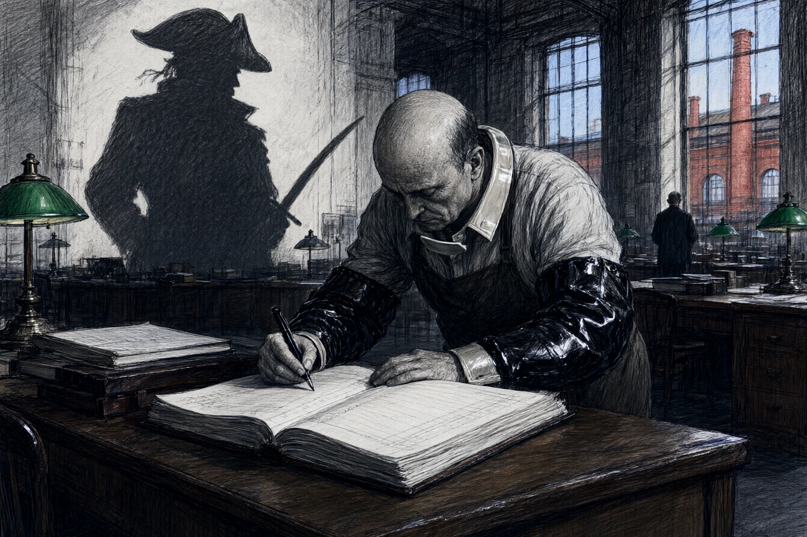

Dans la grande salle de comptabilité de la filature DMC à Mulhouse, dont les verrières d'usine donnaient sur les cheminées de briques rouges du canal de décharge, Théodore Groslot alignait des colonnes de chiffres au centime d'euro près. À cinquante-deux ans, dont trente passés sur le même tabouret de hêtre tourné, Groslot portait des manchettes de lustrine noire pour épargner ses poignets de chemise et ne levait jamais le nez de ses grands livres reliés en basane verte.
Son chef de bureau, Monsieur Kuentz, s'arrêta devant son pupitre en tapotant sa montre de gousset.
« Trois centimes d'écart sur le grand livre des salaires du tissage mécanique, Groslot. La clôture trimestrielle part à Bâle ce soir à dix-huit heures. « C'est un arrondi d'escompte sur la laine peignée de Roubaix, monsieur Kuentz. La balance est exacte au millième. » « Un compte exact ne connaît point d'arrondi, mon cher. Recomptez la colonne sept avant le coup de cloche de midi. » »
Groslot trempa sa plume d'acier dans l'encrier de porcelaine blanche sans répondre. Sous son crâne chauve, à l'abri de son front de rond-de-cuir docile, une caravelle espagnole de trente canons forçait le blocus de Carthagène sous les tirs de mitraille. Le capitaine Groslot, un sabre d'abordage entre les dents et un tricorne galonné d'or sur l'oreille, venait de passer le gouverneur de la Havane par-dessus bord après lui avoir coupé les deux oreilles d'un revers de lame.
* * *
À dix-neuf heures et quart, au premier étage de sa maison mitoyenne de la rue de Bâle, Théodore Groslot prenait son dîner en face de Madame Groslot.
Ernestine, une femme osseuse dont les cheveux gris étaient tirés en chignon serré comme une pomme de pin, servait la soupe aux poireaux dans deux écuelles de terre cuite.
« Le beurre a encore pris deux sous chez l'épicier du coin, Théodore. Et le boucher a refusé de me couper les rognons sans me compter l'os avec. Tu aurais dû demander une avance sur ta prime de bilan au lieu de laisser passer les fêtes. « Le directoire ne verse les gratifications qu'en janvier, Ernestine, » murmura-t-il en trempant son pain rassis dans le bouillon tiède. »
Madame Groslot reposa la louche avec un claquement sec.
« Tu as toujours une excuse pour baisser la tête devant tes supérieurs. Le mari de ma cousine Marthe a exigé une augmentation de vingt pour cent à la fonderie de Dornach ; il emmène sa femme à Strasbourg pour le nouvel an. Toi, tu seras encore à compter des factures d'huile de graissage le soir de la Saint-Sylvestre. »
Groslot regardait le couteau à découper le pain, posé près du saucisson à l'ail. Dans son esprit, la lame effilée s'enfonçait avec une douceur exquise dans le corsage de mérinos noir de son épouse, juste sous le camée en coquille d'huître. Ernestine s'effondrait sur la toile cirée sans pousser un cri, la bouche ouverte dans un silence éternel, et lui, Théodore, prenait la malle d'osier, sautait dans l'express de nuit de Bâle et débarquait à Venise avec trois valises de florins d'or.
« Tu m'écoutes quand je te parle, Théodore ? « Oui, ma chatte. Je pensais à la facture de charbon. » »
* * *
À vingt-trois heures, la chambre à coucher sentait le camphre et la flanelle tiède. Ernestine dormait déjà, tournant le dos au côté gauche du lit, son souffle régulier sifflant comme un soufflet de forge sous son bonnet de nuit en dentelle.
Groslot, couché sur le dos, les yeux grands ouverts dans l'obscurité, écoutait les cloches du temple Saint-Étienne sonner les onze coups.
Le balancier de l'horloge comtoise scandait la nuit : tic, tac, tic, tac.
Dans sa tête, la forêt vierge du Rio Grande s'étendait sous un ciel d'encre violette. Des jaguars aux yeux d'ambre rôdaient autour du bivouac. Groslot rechargeait sa carabine Winchester à deux coups, entouré de guerriers indiens qui s'inclinaient devant son regard d'acier. Il était le maître du fleuve, l'homme sans maître, le seigneur des terres sauvages.
Un coup de vent fit battre le volet extérieur contre le chambranle de chêne.
Ernestine remua dans ses draps avec un grognement pâteux.
« Théodore… lève-toi et va fermer le volet de la cuisine. Le vent souffle dans le poêle. « Tout de suite, mon amour, » murmura Groslot d'une voix machinale. »
Il glissa ses pieds froids dans ses pantoufles de feutre usé, se leva en frissonnant dans sa chemise de nuit en cotonnade grise, et descendit l'escalier ciré à pas de loup pour aller bloquer le crochet de fer dans la nuit noire de Mulhouse.